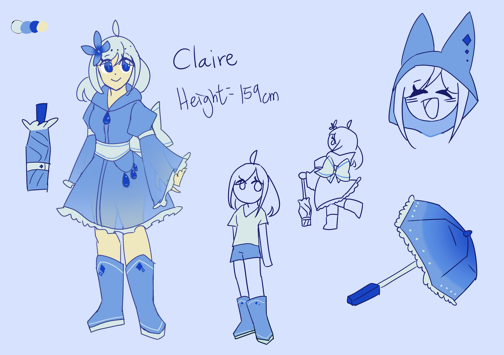

I hope I can always be with all of my friends

Lore facts:
- With her power, she could the forms of water to her advantage (e.g. Using ice for attacks).
- She used a compact umbrella as a weapon. She could wack enemies with the umbrella like a bat, and use it like a shield when opened. Don't worry, her crafts were very durable.
- She's very fond of shiny things, like gemstones and sunlight, so much so she had the urge to eat the gems (?)
- She was seen as Grey's mentor.
- She had shocking high grades despite how she often fell asleep at class.
- Unfortunately, she was also bad at Math
- She was very interested in nature, she knew a lot of oddly disturbing details about it
- She often secretly broke rules, like sneaking out during curfews.
Meta facts:
- Her character motif is rain and gemstones.
- Her raincoat design originally belonged to Mira, but I gave it to Claire for some reason
- She is one of my oldest OCs, in fact, she's my second OC after I restarted my art journey.
- Her old name was 艾黎森·妮雅, Alison Nia when translated in Google Translate